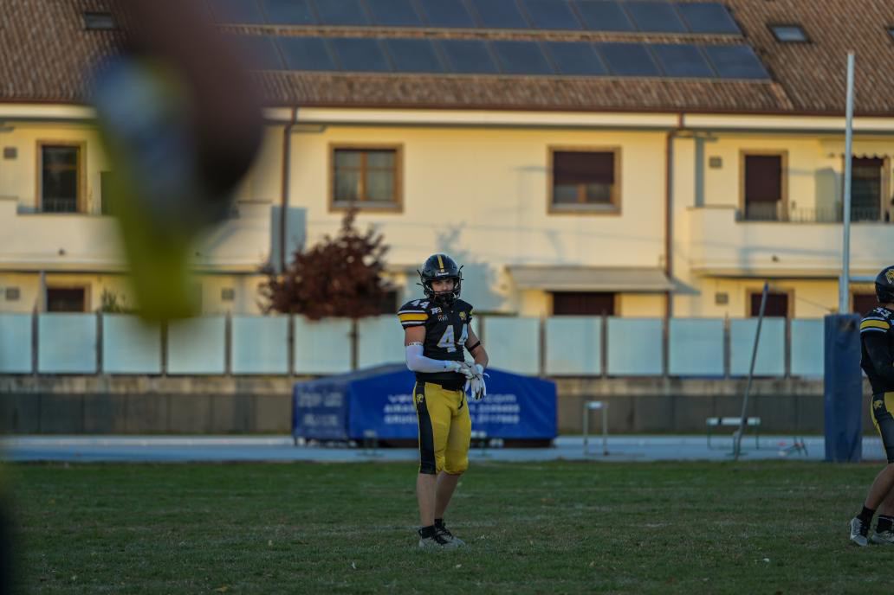

Sono Riccardo Aviano, uno studente dell'Istituto internazionale Edoardo Agnelli, il cui è appassionato di informatica, motori e sport.
La mia passione dell'informatica nasce quando ero piccolino. Fin da che ho memoria ricordo che mi ha sempre affascinato il modo di come funzionavano i telefoni, tablet
e i vari oggetti tecnologici.
Ricordo che chiedevo a mio padre di regalarmi i sui vecchi telefoni così da poterli aprire e vedere cosa c'era dentro; ma la mia vera
passione per l'informatica nasce ufficialemnte in seconda media. in questo periodo inizio ad approcciarmi al mondo della programmazione guardando video tutorial,
navigando su internet e chiedendo come regali di natale manuali per imparare linguaggi di programmazione come Pyton.
In questi anni di superiori, grazie al professor
Mancuso e la professoressa Arruzza, spero di imparare il più possibile tutto ciò che l'informatica comprende per diventare un informatico completo e competente.

La mia passione per i motori nasce circa 6 anni fa. Durante il covid, avendo molto tempo, ho iniziato a vedere molte più serie tv e film. Nella home di Netflix mi è
apparsa questa serie chiamata "Formula 1 Drive to Survive", a mio parere una delle migliori docuserie, che tratta di come le scuderie e piloti di F1 si
preparano per le gare e la stagione.
Vedendo questa serie mi sono appassionato al mondo della Formula 1 e in maniera più ampia al mondo dei motori, ma la passione
più grande, appartenente a questo mondo, sono le moto. Questo interesse ha origine qualche anno prima grazie a mia mamma. Infatti quando ero bambino, insieme a mia mamma,
guardavamo la moto gp.
Lei ha sempre voluto guidarne una ma per colpa della sua disabilità e condizioni fisiche non ha mai potuto.
Ad oggi io guido una moto
125 cc motard e porto ancora avanti questo interesse con amore e passione.

La mia passione per lo sport non so dirvi da quanto la possiedo perché da che ho memoria mi è sempre piaciuto.
Mia mamma mi ha raccontato una volta che quanto ero
bambino stavo ore davanti ai canali sportivi cercando di replicare i movimenti dei vari sportivi, come i tennisti.
Grazie a mio nonno da quando avevo 5 anni ero
abbonato alle poltroncine granata dello stadio del Torino FC, quindi si sono un granata e ciò mi ha portato ad avere una passione per il calcio tanto che a 6 anni
chiesi ai miei genitori di iscrivermi a calcio. Iniziai a giocare tutti i ruoli, ma in un torneo, mi provarono portiere e da quel momento non mi muosi mai più. Fu
il mio ruolo per 6 anni. Al termine di questi, capendo il mondo calcistico come era organizzato, decisi di cambiare sport. Negli anni ho avuto modo di sperimentare tutti
gli sport ma nessuno mi prese tanto quanto il calcio tranne uno.
Mio padre fu un campione, conosciuto ancora oggi per la sua abilità nella telecronaca in questo sport
e come allenatore. Sto parlando di football americano.
All'età di circa 12 anni ho iniziato a praticare ufficialmente il football americano, cito
"ufficialmente" perché prima avevo provato facendo qualche allenamento ma non mi aveva mai preso, presso la società dei Giaguari Torino, società in cui tutt'oggi
gioco i campionati nazionali giovanili, girando tutti i ruoli presenti.
